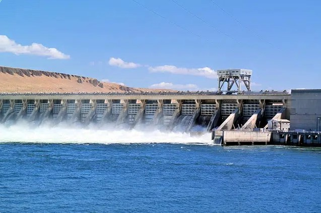
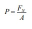
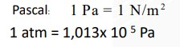
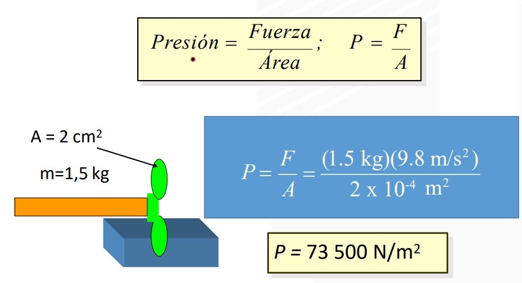
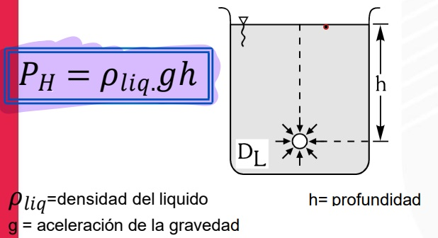
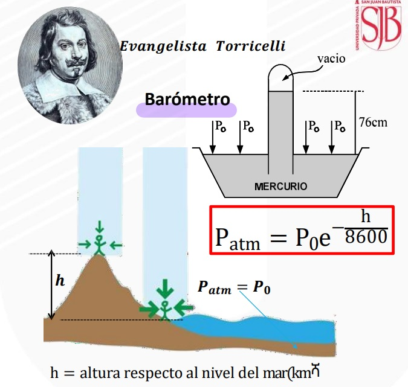

HIDROSTATICA
Se denomina hidrostática a la especialidad de la física dedicada al análisis del equilibrio de los fluidos.
Se trata de la rama de esta ciencia que se orienta a la investigación de los fenómenos vinculados a los fluidos que se hallan en un contenedor o recipiente.
La presión hidrostática es la presión ejercida por un fluido en reposo debido a su propio peso. Esta presión aumenta con la profundidad en el fluido, ya que a mayor altura de columna de fluido, mayor es el peso que ejerce sobre la superficie inferior. Se puede calcular con la fórmula P = ρgh, donde P es la presión, ρ es la densidad del fluido, g es la aceleración debida a la gravedad y h es la altura del fluido. La presión hidrostática es fundamental en diversas aplicaciones, como el diseño de estructuras submarinas, represas y la predicción de fenómenos meteorológicos.

Principios Fundamentales de la Hidrostática
Presión en un líquido:
La presión (𝑃) en un líquido en reposo se define como la fuerza ejercida por unidad de área:

Donde:
𝐹: fuerza normal a la superficie (N).
𝐴: área sobre la que actúa la fuerza (m²).
Presión de pascal:
Una presión de un pascal (1 Pa) se define como una
fuerza de un newton (1 N) aplicada a una área de un
metro cuadrado (1 m2).

Presión en los sólidos:
Es la fuerza normal por unidad de área y la relación de la fuerza (F) entre el área (A).

PRESIÓN HIDROSTATICA (PH)
Cuando nos sumergimos en el agua notamos que
a mayor profundidad la presión que
experimentamos es cada vez mayor cuando más
nos sumergimos. Esto se debe
fundamentalmente al peso del líquido que se
ubica por encima de nosotros.

PRESIÓN ATMOSFERICA (pO)
La atmósfera es la capa de aire que envuelve a
la tierra, su espesor se calcula en unos 500 km,
tiene peso y por lo tanto ejerce una presión
sobre la superficie terrestre y sobre los objetos y
las personas que viven en la tierra.

En resumen, los conversores de unidades han evolucionado a lo largo de la historia para satisfacer las necesidades de medición de la humanidad,
desde los sistemas de unidades antiguos hasta los estándares modernos como el sistema métrico, proporcionando herramientas esenciales para la
comunicación y el comercio global.